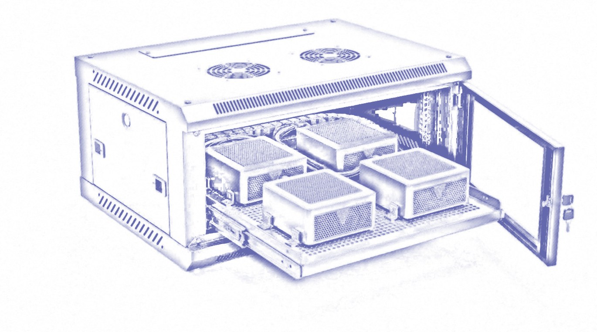

Unovie builds custom Edge-AI Agentic Systems for deep-tech factories. We design, build and run them for battery, chip, space, robotics, defense and advanced-energy plants. AgentMesh works at the machine. AgentNexus works across all your sites. Fixed scope, fixed cost.

Robots, cameras, sensors and test rigs. Every signal your line produces, read right next to the machine.
A drifting robot joint, a bad weld, a pump wearing out. It flags them in milliseconds and acts only where the risk is low, like sending a part to rework.
Anything that touches safety goes to your control system and operators. It drafts the work order or quality report, and a person signs it.
These factories are packed with sensors, cameras and robots. They make more data than people can watch. Much of that data can't leave the site, and auditors want proof of every decision. That is the problem we solve.
Cell, module and pack lines watched in line. Weld, formation and aging signals are checked, and suspect parts go to rework. On storage fleets, early warning of thermal runaway as an alarm.
Fab utilities and supplier gas, chemical and parts plants watched from their own signals, through ramp-up and beyond. Process and design data never leave the fence.
Vehicle and satellite lines with vision QA and drafted quality records; rocket and engine test stands watched run by run, beside the qualified test system.
Robot-dense lines and the robots, drones and vessels they build: joint, motor and gearbox health at every cell, and fleet health for systems that run disconnected.
New shipyards, autonomous-vessel yards and dual-use factories. Line and yard QA, machinery health and network watch, inside your enclave.
Construction, balance-of-plant and site-security monitoring on new reactor and power sites. Never on reactor safety systems.
Each job is a ready-made kit for one problem on your line. It comes with its connections, rules, playbook and reports. It goes live in weeks.
Catches joint, servo and gearbox drift before it scraps parts or stops the line.
DeepVision cameras check every part at the cell, alongside process signals. Runs on NVIDIA Jetson AGX Thor.
Checks weld and formation signals in line. Warns of thermal runaway on storage fleets.
Watches pumps, chillers, scrubbers and gas systems at the fab and its suppliers.
Flags issues to the test conductor during a run. Drafts the post-test report.
Drafts non-conformance reports and quality records. A named person signs them off.
Your control system stays in charge. Your data stays where you put it. These are the promises we build to.
AgentMesh acts on its own only where a wrong call costs little, like sending a suspect part to rework. Anything touching safety becomes an alarm and a request. Your PLC, cell controller and operator decide. A language model is never on the path that moves equipment. We make no SIL claim.
AgentMesh is air-gapped at the machine. AgentNexus runs in your own enclave. It connects out only through one gate you control and can audit, to your ERP and approved AI models (in design).
Every decision, request and change goes into a signed Evidence Log. You can show your auditor what the AI did and why. That helps with CMMC, IEC 62443 and aerospace quality reviews.
A new skill switches on only after it proves itself on cases it has never seen. Every change is signed and can be rolled back. We design against NIST SP 800-53 and the NIST AI Risk Management Framework.
AgentMesh makes fast calls next to your equipment. AgentNexus handles the paperwork and planning across every site. Both run on hardware we build for you.


A Sovereign Pod sits on the factory network at the line. It reads robot, vision, electrical, battery and test signals and decides within 30 ms (target). It acts on its own only where a wrong call costs little. Anything about safety goes to your PLC, safety system and operators as an alarm and a request. Every decision is saved in a signed Evidence Log.
One rack serves your whole fleet from your own enclave. Its agents take events from every AgentMesh pod. They draft maintenance plans, NCRs, quality records and work orders for a named person to approve, and answer within 0.5 s (target). New skills are tested before they go live. AgentNexus never moves equipment.
An air-gapped platform for a satellite pay-TV device lab, not a factory. It checks 16 boxes per 4K stream and attaches proof to every verdict. Detection mAP rose from 0.836 to 0.961 after one in-house retrain.
Does data leave the site? What if the link drops? Is it a safety system? What does a pilot cost? Fourteen buyer questions, each answered in the first sentence.
Every step has a fixed scope. You see results on your own line before you commit.
No charge. We spend 1–2 days with your sensors, network and control systems.
$40–60K. One job on your data, with measured latency and signed evidence. Credited in full against production signed within 90 days.
A Sovereign Pod connected to your PLCs, MES and work-order system. About a quarter after the pilot.
New lines and sites reuse the playbook. AgentNexus links them up.
Tested, signed improvements, audit evidence and support. Buy the hardware or take it as a service.
Tell us about one line or one problem. An engineer will show you what Unovie would watch, what it would catch and what it would hand your team. If it fits, we start with a 6-week paid pilot on your own line, credited toward production.